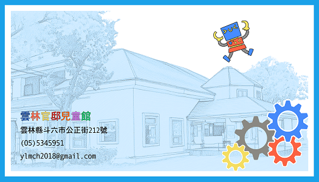

OTTO BLE 遙控器
連線 / Connect
中斷 / Disconnect
尚未連線
速度
2
指令格式：
command + speedIndex + "\\n"
（例如
forward2
）
移動 / Move
⬆ 前進 / Forward
⬅ 左轉 / Left
⏹ 停止 / Stop
➡ 右轉 / Right
⬇ 後退 / Backward
超音波互動 / Ultrasound
量測一次 (ultrasound)
自動避障 ON
自動避障 OFF
距離串流 ON
距離串流 OFF
距離：
--
cm
AUTOAVOID:OFF
US_STREAM:OFF
需要 Arduino 端支援指令：
autoavoid_on
/
autoavoid_off
/
us_stream_on
/
us_stream_off
（皆會帶 speedIndex 與換行）
表情與動作 / Emotions & Gestures
開心 / Happy
超開心 / Super Happy
難過 / Sad
睡覺 / Sleeping
困惑 / Confused
煩躁 / Fretful
愛心 / Love
生氣 / Angry
魔法 / Magic
揮手 / Wave
勝利 / Victory
失敗 / Fail
放屁 / Fart
